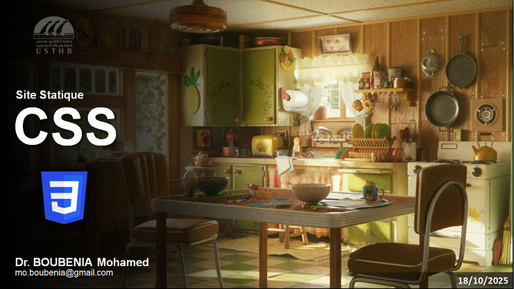

Protection des Données
La sécurité d'une application web repose sur trois piliers : la confidentialité, l'intégrité et la disponibilité des données stockées sur vos serveurs.
DécouvrirApprenez les bases pour protéger vos sites et applications web contre les vulnérabilités courantes
CommencerSécurisez les formulaires HTML en filtrant les entrées utilisateurs côté client et côté serveur.
Lire plus
Protégez l'affichage de vos pages web contre le détournement de clics (Clickjacking) et l'injection de styles.
Lire plusComprenez comment éviter l'exécution de scripts malveillants dans le navigateur des visiteurs.
Lire plusDécouvrez comment le chiffrement SSL/TLS sécurise les échanges HTTP entre le client et le serveur.
Lire plusLa sécurité d'une application web repose sur trois piliers : la confidentialité, l'intégrité et la disponibilité des données stockées sur vos serveurs.
DécouvrirApprenez à utiliser les requêtes préparées pour protéger vos bases de données contre les accès non autorisés.
Lire plusGérez les mots de passe avec le hachage (bcrypt) et sécurisez les cookies de session des utilisateurs.
Lire plusSurveillez le trafic HTTP en temps réel pour bloquer les requêtes suspectes et les attaques par déni de service.
Lire plusEnregistrez les événements du serveur pour détecter rapidement les tentatives d'intrusion et analyser les bugs.
Lire plusLe projet OWASP regroupe les 10 vulnérabilités web les plus connues. Appliquer ces règles dès le développement permet de créer des sites web fiables et sécurisés.
En savoir plusSuivez-nous: